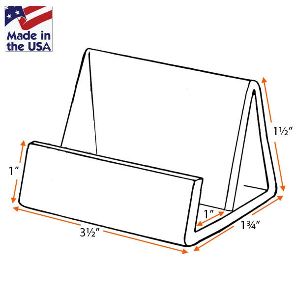
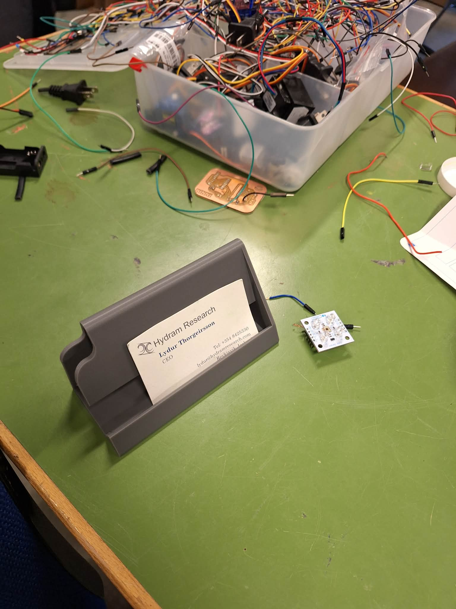
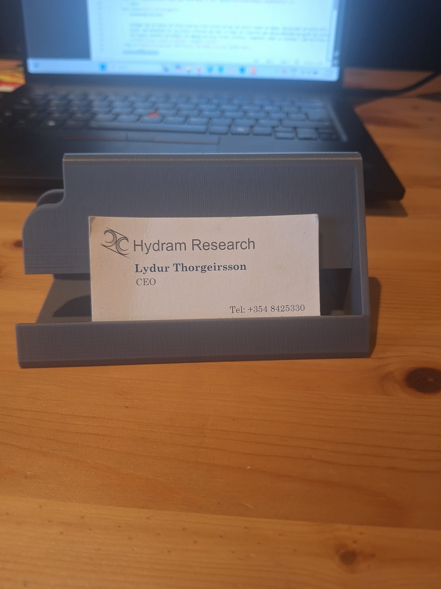

Verkefni 3 - 3D prentun og 3D skönnun
Markmið
Markmiðið með þessu verkefni er að læra á 3D prentun og skönnun.
3D skönnun
Verkferill
Ég byrjaði á að skanna sjálfan mig með appinu polycam en þegar ég ætlaði að sækja skránna þá þurfti ég að borga svo ég skipti yfir í scaniverse. Ég ákvað að skanna nafnspjaldastandinn sem ég prentaði í sama verkefni. Í skönnuninni hér að neðan má sjá að bakhliðin skannaðist ekki almennilega en framhliðin og hliðarnar komu nokkuð vel út. Til að bæta skannanir í framtíðinni þá gæti verið sniðugt að finna betri stað til að skanna. Ég prófaði að skanna á gólfinu svo að ég gæti labbað allan hringinn en allar skannanirnar komu nokkuð undarlega út og virtust flatar. Ég hugsa að betra hefði verið að nota polycam þar sem skönnunin kom betur út þar en það er líklega ástæðan fyrir að það kostar.
Hnökrar
Eins og áður kom fram þá þurfti ég að skipta um forrit vegna vandamála með "exportið" en eftir að ég skipti yfir í scaniverse þá leystist það vandamál. Scaniverse virtist þó ekki ná að skanna eins vel. Einnig þá var ég ekki með nógu góða aðstöðu til að skanna þar sem best er að geta labbað allan hringinn utan um hlutinn.
Þrívíddarprentun
Hvað er ég að prenta
Ég átti mjög erfitt með að finna eitthvað til að prenta. Þegar ég horfi yfir herbergið mitt þá sé ég ekkert augljóst vandamál sem þurfti að leysa. Síðn datt í hendurnar á mér nafnspjald eftir að hydram research kom og kynnti fyrirtækið í skólanum. Þá fékk ég þá frábæru hugmynd að prenta út nafnspjaldastand.






Verkferill
Þegar ég var búinn að finna hvað ég vildi prenta þá gat ég hafist handa að hanna. Ég byrjaði að leita eftir innblæstri. Ég fann myndina sem sjá má hér til hliðar og ákvað að hanna líkan stand en með mínum brag. Ég skoðaði lengdirnar á meðal nafnspjaldi og hafðist handa. Fyrst teiknaði ég útlínur á laginu og "extrudaði" út um 130mm. Síðan gerði ég endana og skar smá úr horninu upp á fagurfræðina að gera.
Þar sem markmiðið var að prenta eitthvað sem ekki er hægt að framleiða með öðrum aðferðum þá gerði ég innfyllt horn til að stoppa það að nafnspjöldin renni úr standinum. Hornið yrði mjög erfitt eða jafnvel ómögulegt í framleiðslu með frádráttar framleiðslu þar sem hallinn á standinum er fyrir. Ég var efins um að prentarinn gæti prentað litla hornvegginn nánast í lausu lofti svo að ég gerði litla prufu áður en ég prentaði allan standinn. Prufan gekk fullkomlega upp svo ég fór beint að prenta allan standinn.
Í þessu verkefni þá höfðum við aðgang að Prusa slicer prentara. Hugmyndin okkar er teiknuð í CAD forritinu Fusion og svo fært yfir í Prusa forritið þar sem hlutnum er komið yfir á það form sem prentarinn skilur. Þar er einnig hægt að bæta inn undirstöðum en það þurfti ekki í þetta sinn. Þegar standurinn var prentaður þá var hann látinn standa á endaveggnum svo að mest öll prentunin færi beint upp fyrir utan litla vegginn en vegna prófana var það vitað að prentarinn réði við hann.
Hlekkur inn á Thangs síðuna mína
Hnökrar
Þetta verkefni gekk nokkuð smurt fyrir sig. Það helsta sem þyrfti að hafa í huga ef það á að prenta hann aftur þá væri sniðugt að minnka hann aðeins. Eins og sjá má á myndum þá er hann bæði hærri og breiðari en hann þarf að vera. Í hönnuninni hélt ég að það skipti bara máli að hafa hann ekki of lítinn en þegar hann liggur fyrir framan mig þá sé ég að það er ekki rétt. Þetta eru þó mistök sem auðvelt er að læra af og ég er jafnvel að íhuga að prenta hann aftur vegna þess að ég er tiltölulega stoltur af hönnuninni. Annars var lítið sem kom upp á nema það að ég var mjög lengi að finna hugmyndina og því dróst verkefnið soldið á langinn.
Innblástur og heimildir
Til að fá innblástur að standi þá googlaði ég: buisness card stand og leitaði í myndum. Ég gerði það sama þegar ég fann myndina fyrir stærð á venjulegum nafnspjöldum nema þá googlaði ég: standard buisness card dimensions.